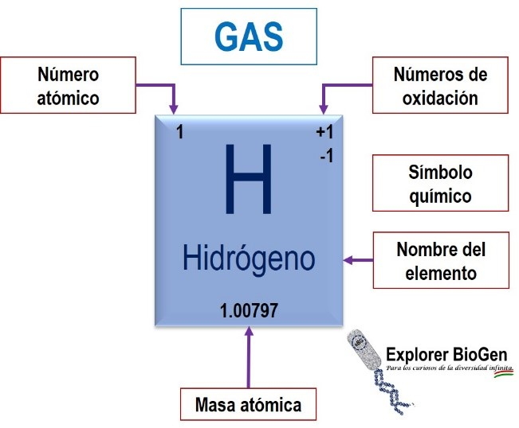

Estructura de la tabla periodica.
Periodos: Son los renglones o filas horizontales de la tabla periódica y corresponden con las capas electrónicas. Actualmente se incluyen 7 periodos en la tabla periódica. En el primer periodo sólo hay dos elementos: el hidrógeno y el helio. El segundo y el tercer periodo contienen 8 elementos cada uno. El cuarto y el quinto periodos contienen 18 elemento. El sexto y séptimo periodos pueden contener hasta 32 elementos
Los grupos con mayor número de elementos, son los grupos 1, 2, 13, 14, 15, 16, 17 y 18, y como se ha mencionado se conocen como grupos de elementos representativos, los grupos del 3 al 12 están formados por los llamados elementos de transición y los elementos que aparecen aparte se conocen como elementos de transición interna que se denominan como tierras raras. Los elementos de la primera fila se conocen como lantánidos mientras que los de la segunda fila son los llamados actínidos.
Bloque s: se trata de los 2 primeros grupos de la tabla periódica. Podemos encontrar aquí a los metales alcalinos y alcalinotérreos que se caracterizan por ser blandos, tener bajos puntos de fusión, ser electro positivos y químicamente activos
Bloque p: se trata de aquellos elementos que se encuentran en los últimos 6 grupos de la tabla periódica (excepto el helio). Cuenta con elementos no metálicos, algunos semimetales y metales. Los elementos que pertenecen a este bloque actúan como elementos que pueden perder o ganar electrones, dependiendo de la electronegatividad del elemento con el que reaccionen, de tal modo que puedan formar enlaces del tipo covalente.
Bloque d: aquí podemos encontrar a los elementos de transición. Los elementos que se encuentran aquí cuentan con dos electrones de valencia, por lo tanto, muy electropositivos y altamente reactivos. Otras cualidades importantes es que tienen altos puntos de fusión y de ebullición además de que, pueden formar distintas sales, por último, son muy buenos catalizadores.
Bloque f: en este bloque podemos encontrar a la serie de los lantánidos y actínidos. Son metales con un alto punto de fusión. Tienen estados de oxidación variable y pueden formar sales.
Propiedades periódicas: cuenta con tres diferentes propiedades periódicas: la electronegatividad, el radio atómico y la energía de ionización.
3. Energía de ionización: Es la energía necesaria para separar un electrón de un átomo. Con la energía de ionización se puede medir que tan unidos se encuentran los electrones a los átomos. Una energía de ionización baja indica la remoción fácil de electrones, por lo tanto, la fácil formación de un ion positivo
¿Cómo se lee la tabla periódica?
Conforme avanzamos, encontramos a aquellos elementos que pertenecen a las familias IVA y VA con sus 4 y 5 electrones respectivos.
Para las familias VIA y VIIA tenemos como representantes a los elementos azufre (S) y Cloro (Cl) con sus respectivos 6 y 7 electrones de valencia.
Por último, mostramos a dos elementos representativos de la familia VIIIA y que cuentan ya con sus 8 electrones de valencia, el Argón (Ar) y el Kriptón (Kr).